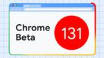
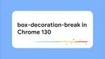

developer.chrome.com: Blog
https://developer.chrome.com/blog/
Latest news from the Chrome Developer Relations team
フィード

5 Cool Things To Do with DevTools AI Assistance
developer.chrome.com: Blog
Learn about fun and exciting use-cases of the new AI assistance panel in DevTools
4日前

Chrome 131 beta 1
1
developer.chrome.com: Blog
Discover the features that are coming to Chrome with the latest beta.
9日前
New in Chrome 130 2
developer.chrome.com: Blog
Chrome 130 is rolling out now! Document picture in picture gives you more control over picture in picture windows, CSS Nested declarations fix some tricky edge cases, and you can specify how decorations on elements split across multiple lines behave. Pete LePage has all the details about what's new for developers in Chrome 130.
10日前
What's New in WebGPU (Chrome 130)
developer.chrome.com: Blog
Dual source blending, shader compilation time improvements on Metal, deprecation of GPUAdapter requestAdapterInfo(), and more.
10日前
What's happening in Chrome Extensions, October 2024
developer.chrome.com: Blog
An overview of the recent changes in Chrome Extensions, plus exciting upcoming extensions features developers can look forward to.
14日前

The box-decoration-break property in Chrome 130 1
developer.chrome.com: Blog
Chrome 130 includes full, unprefixed box-decoration-break support.
14日前

Private Network Access on hold
developer.chrome.com: Blog
The Private Network Access (PNA) rollout is on hold.
16日前
Inheritance changes for CSS selection styling
developer.chrome.com: Blog
A change to CSS highlight inheritance is coming in Chrome 131.
17日前
Translation API available for early preview
developer.chrome.com: Blog
The Translation API is now available for built-in AI early preview program participants.
17日前
Catch prediction in Chrome DevTools: Why it's hard and how to make it better
developer.chrome.com: Blog
Learn how the DevTools debugger predicts whether an exception is caught.
23日前